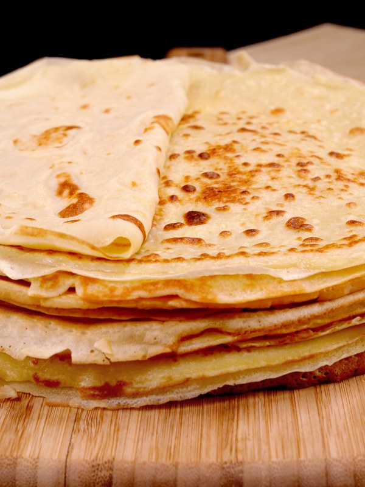
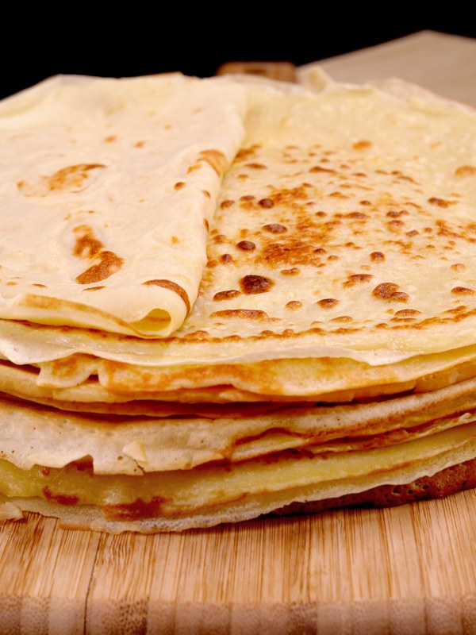

Pâte à crêpes simple
Selon nos informations, cette recette est compatible avec le régime suivant : végétarien
TEMPS TOTAL : 17 min

 

Ingrédients
- 1 l de lait demi-écrémé
- 500 g de farine
- 3 cuillères à soupe d' huile
- ½ verre de bière
- 5 oeufs
Préparation
-
Étape 1Dans un saladier verser la moitié de la farine, puis rajouter les oeufs un à un, rajouter ensuite un peu de lait puis de la farine puis à nouveau du lait et ainsi de suite.
-
Étape 2Enfin rajouter l'huile et la bière.
-
Étape 3Laisser reposer 1 heure, votre pâte est prête.